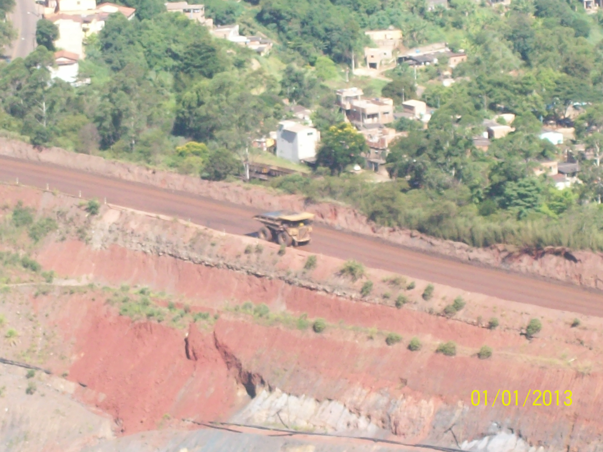

Lances por rodada
Valores nominaisLances vencedores não são receita recebida. A 6ª rodada teve critérios sociais e a 7ª foi cancelada; não são inseridas como zero financeiro.
Carregando resultados validados…
Planejamento com evidências
Explore os lances e os destinos das áreas. Compare os modelos e acompanhe os registros posteriores à arrematação.

Lances vencedores não são receita recebida. A 6ª rodada teve critérios sociais e a 7ª foi cancelada; não são inseridas como zero financeiro.
Arrematada: lance vencedor. Conquistada: destinação sem disputa financeira. Livre: resultado registrado na rodada. Consulte a ficha antes de inferir a situação atual.
Antes da ofertaÁrea, localização e histórico conhecido antes do corte.
Resultado da rodadaArrematada, conquistada ou livre: três classes distintas.
Acompanhamento posteriorPesquisa, autorização de aproveitamento e CFEM, sem usar esses resultados para prever o passado.
Aprendizado supervisionado
O algoritmo aprende com rodadas anteriores. A avaliação verifica se ele distingue arrematação, conquista e área livre nas rodadas seguintes.
F1 macro equilibra precisão e recuperação, dando o mesmo peso às três classes. Acurácia balanceada é a média de recuperação por classe. Log-loss e Brier avaliam as probabilidades: menor é melhor. Nenhuma métrica isoladamente comprova utilidade operacional.
Queda no F1 ao embaralhar uma família de atributos, com cinco repetições. Mostra dependência preditiva, não causalidade nem significância estatística. Atributos correlacionados podem substituir uns aos outros.
Linhas: resultado observado. Colunas: classe prevista. Os números na diagonal são os acertos.
| Método | Hipótese testada |
|---|---|
| Referências global e por UF | Frequências históricas, com suavização para estados pequenos, já organizam os destinos. |
| Regressão logística | Combinações lineares de atributos explicam parte das diferenças entre os destinos. |
| Boosting | Relações não lineares e interações acrescentam informação. |
| Extra Trees | Uma combinação de árvores aleatorizadas captura padrões do histórico. |
Os agrupamentos não supervisionados e a regressão de lances anteriores continuam disponíveis. A regressão apresentou R² negativo e não sustenta indicação de preço mínimo.
Avaliação de uma carteira
Reproduza uma seleção na 8ª rodada e veja quantos resultados o modelo teria concentrado. Ajuste o objetivo, o recorte e a capacidade da equipe.
Carregando previsões…
| Substâncias | Resultado observado |
|---|
Resultado posterior · até 2025
Acompanhe os processos associados às áreas arrematadas. Os marcos mostram registros encontrados, não uma sequência obrigatória nem a fase jurídica vigente.
As contagens se sobrepõem e não podem ser somadas. Origem temporal: data da associação, não uma data de arrematação presumida. Licenciamento e PLG ainda não consolidados. Rodadas recentes têm menos tempo de acompanhamento.
Valores brutos, após o mês da associação. Ausência de correspondência não prova ausência de atividade. Pagamentos podem se referir a obrigações anteriores; não é uma estimativa causal do efeito do leilão.
Potencial de aproveitamentoTítulos e autorizações são marcos administrativos, sem garantir produção.
Produção efetivaA base aberta agregada do Anuário Mineral Brasileiro não fornece aqui ligação por processo. Produção individual ainda não confirmada.
Recolhimento identificadoA CFEM complementa o acompanhamento; não substitui a verificação da produção e dos títulos.
| Processo de origem | Processo associado | Rodada | Substâncias | CFEM posterior |
|---|
Vínculos candidatos por associação tipo 8; confirmação documental e espacial pendente. Duas origens com repetição ambígua foram excluídas do seguimento. Não é uma rede completa de cessões e desmembramentos.
Ciência aberta
Protocolo, código, recortes e limites para conferir e reproduzir o experimento.
Treinamento e seleçãoRodadas 1–2 → validação na 4ª; rodadas 1–3 → validação na 5ª. Seleção pelo F1 macro médio, com parâmetros fixos.
Avaliação retrospectivaRodadas 1–5 → avaliação na 8ª. Processos com o mesmo número no teste são removidos do treino. Associações entre números diferentes ainda podem gerar dependência residual.
Incerteza e explicação300 reamostragens pareadas por processo e cinco permutações por família de atributos. Intervalos condicionais à rodada observada; não medem toda a incerteza futura.
Uso pretendidoOrganizar revisão técnica de carteiras. Um piloto deve comparar tempo de análise, qualidade da seleção e casos relevantes deixados fora. Não há benefício operacional já comprovado.
Recorte estratégico pela Resolução SGM/MME 2/2021. Alta tecnologia é um subconjunto, não sinônimo de todos os minerais críticos. Substância cadastrada não comprova reserva mineral.
Base de referência: 24/09/2026. A rotina de atualização teve falha em 25/09/2026; esta publicação mantém a base congelada validada. Não há dados ao vivo nem retreinamento automático.
Componentes base e tipografia do Design System GOV.BR, com logo ANM e cores institucionais. Protótipo de pesquisa independente, sem certificação de conformidade ou caráter oficial.
Fotografia: mineração em Itabira (MG), Josue Marinho / Wikimedia Commons, CC BY 3.0. Enquadramento recortado na interface. A imagem é ilustrativa e não identifica uma área da base.
{kind=link}